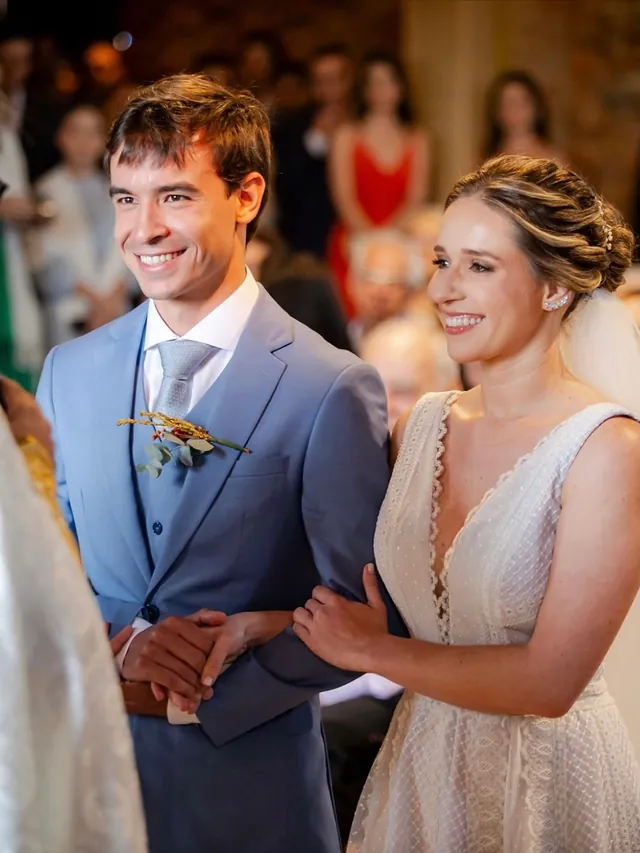
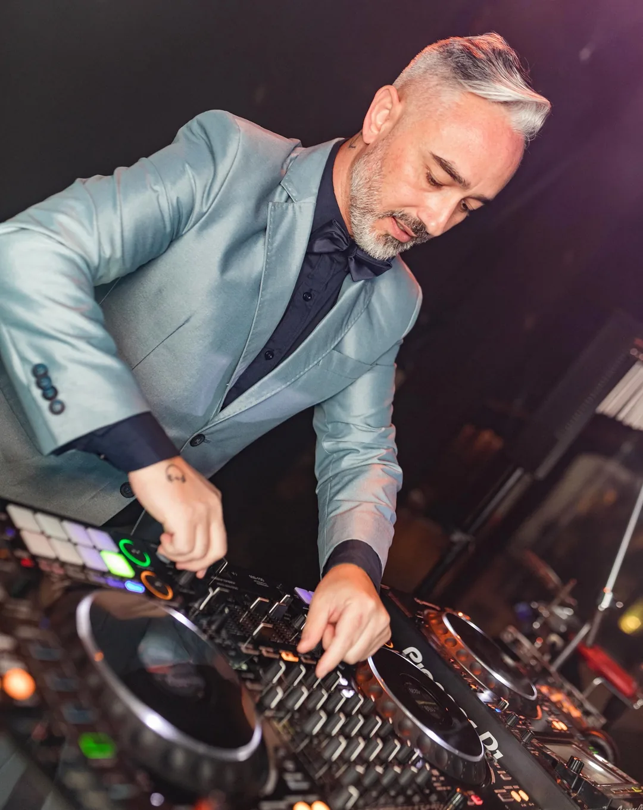
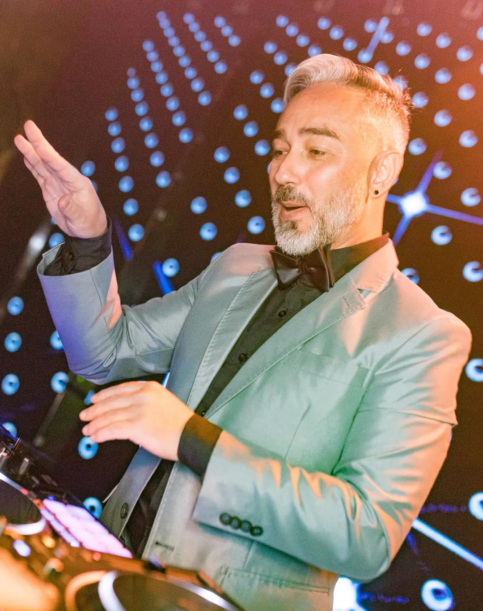
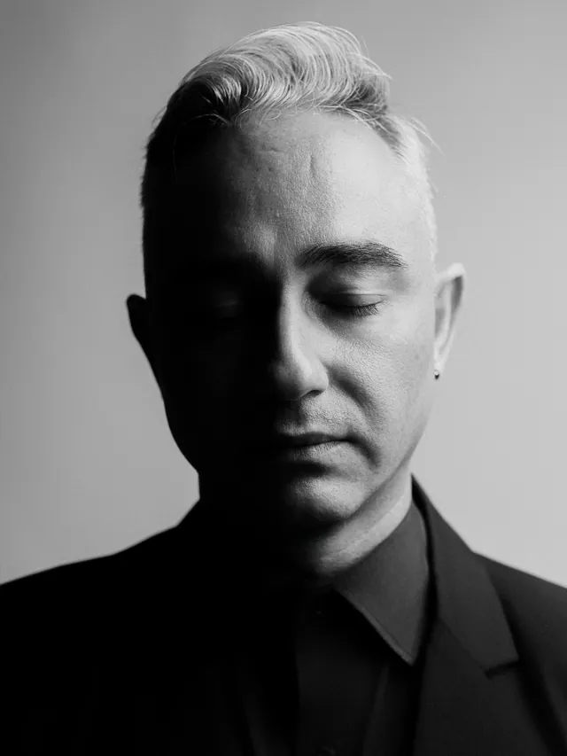
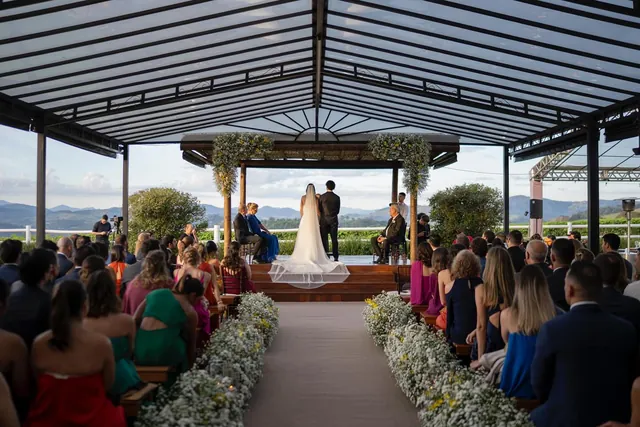
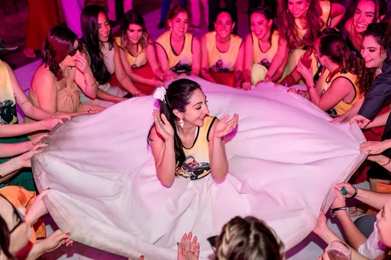
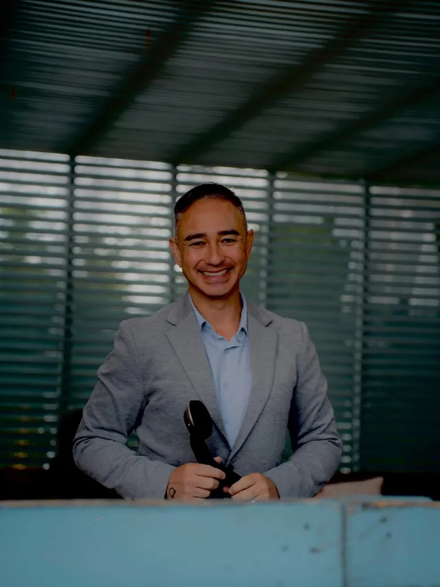
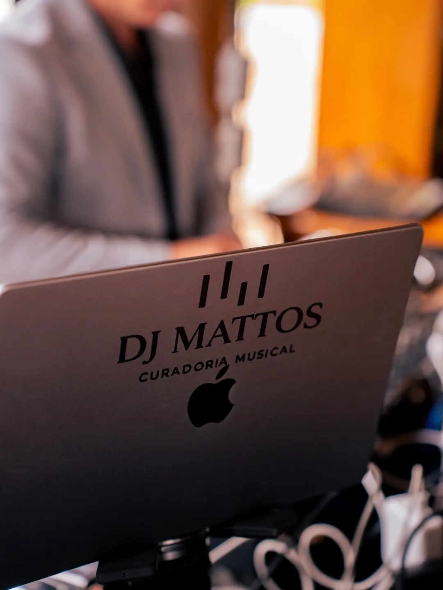
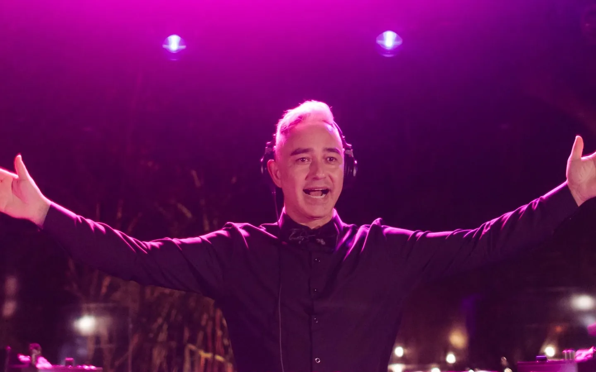

Casamentos
Cerimônia, coquetel e festa com a mesma assinatura. No campo, na praia ou na cidade, com os momentos-chave planejados junto com o casal.
@djmattos_ · Alphaville · São Paulo

Rodolpho Mattos Curadoria musical
Casamentos, celebrações sociais, eventos corporativos e destination wedding.
Não é apenas música. É curadoria personalizada.
Se vocês vão casar, anotem isso: a pista não começa na festa. Ela começa na reunião de alinhamento.
Rodolpho Mattos


Sobre
São 25 anos de música e centenas de casamentos no currículo. A raiz dele é a house music e as suas vertentes, mas a pista de cada festa é desenhada para o casal: Mattos é DJ open format, toca o que faz sentido para a história de quem está celebrando e para cada momento da noite.
“Não há momento marcado para um determinado gênero musical. O melhor momento é aquele em que eu sinto que a música encaixa na pista.”
Quem já esteve numa festa dele conhece a energia: canta, dança e conduz a pista com um sorriso no rosto do primeiro ao último set. Em casamentos, o trabalho vai muito além de tocar música. É sentir o que está sendo vivido ali e transformar isso em trilha.
Celebrações
Da música da cerimônia ao último pedido da madrugada, cada evento ganha um roteiro próprio.

Cerimônia, coquetel e festa com a mesma assinatura. No campo, na praia ou na cidade, com os momentos-chave planejados junto com o casal.

Casamentos de alto padrão em qualquer lugar do Brasil, com a mesma curadoria e a mesma reunião de alinhamento antes da viagem.

Debutantes, aniversários, bodas e festas em família. Repertório que junta as gerações na pista, das crianças às avós.

Lançamentos, encontros de mercado e eventos de marca, com música na medida certa para cada parte da programação.
Onde a pista já aconteceu

Como funciona
Mattos apresenta o trabalho, conta como conduz o evento e conhece o casal. Ele não fecha contrato sem conhecer os noivos.
Expectativas, estilo de festa, o que não pode faltar e também o que não entra de jeito nenhum.
Entrada, primeira dança, abertura da pista, a hora das amigas da noiva: cada momento ganha a música certa, planejada com antecedência.
Com o roteiro na mão, ele lê a energia dos convidados e conduz a noite pelo que a pista pede. Não é sobre volume, é sobre sentir.
Na pista
Momentos reais das festas. Toque no alto-falante para ouvir.

A pista é o lugar onde o “pra sempre” vira memória.
Repertório
Algumas das playlists que ele mantém no Spotify, para sentir o clima antes da reunião.
Gravações ao vivo e mixtapes do Mr. Mattos, o nome que ele usa para os sets autorais.
Consultar uma data
Preencha o básico e a mensagem chega pronta no WhatsApp do Mattos. Com a data livre, o próximo passo é a reunião de apresentação.
Dúvidas
Sim. A base é em Alphaville, mas o Mattos toca em casamentos e eventos em todo o Brasil, incluindo destination weddings.
Pode e deve. No briefing vocês contam o que não pode faltar e o que não entra de jeito nenhum. O resto é curadoria: ele conduz a pista pelo que os convidados respondem.
Faz. Cerimônia, coquetel e festa podem ter a mesma assinatura, com a trilha da entrada e dos votos definida junto com o casal.
Nos eventos, o Mattos trabalha com a Reverb Audiovisual, parceira de som, luz e imagem. O formato é combinado na reunião, conforme o espaço e o tamanho da festa.
Consulte a data pelo WhatsApp. Com a agenda livre, vocês marcam a reunião de apresentação e, depois dela, o contrato reserva o dia.